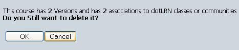

To delete one course you can click in trash icon on the right if you are in your course list or the delete button if you are in the Course Description page:

You will be redirected to a Delete Confirmation page were some information of the course (number of versions and associations) will be displayed and two buttons (OK, Cancel). If you OK then the course will be deleted including all associations and versions.
